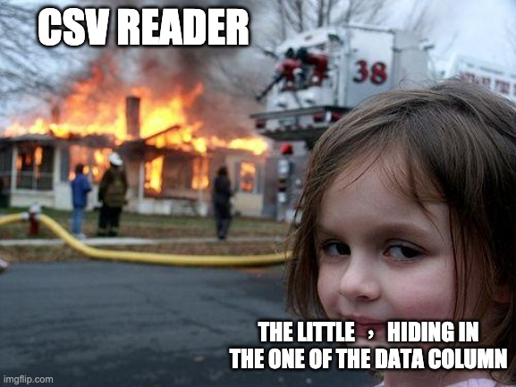

C7 Lecture et traitement de données en table
Activités
 Activité 1 : Format csv
Activité 1 : Format csv
- Consulter le site data.gouv.fr et notamment sa page de documentation. Quels sont les objectifs de ce site ?
- Consulter cette page du site
data.gouv.fr. Quelles données peut-on télécharger sur cette page ? Sous quelle forme sont-elles proposées ? - Prévisualiser les données au format
csv. Faites des recherches sur ce format de données. - Expliquer rapidement comment sont représentées des données au format
csv
Activité 2 : De nouveaux outils en Python
Pour traiter des données en tables représentées sous forme de fichiers csv, on utilise de nouvelles fonctionnalités de Python à découvrir dans les Notebook suivants :
-
La manipulation de fichiers en Python :
- Option 1 : Sur les fichiers
- Option 2 :

-
Les dictionnaires en Python :
- Option 1 : Sur les dictionnaires
- Option 2 :
Activité 3 : Lecture et traitement
- Option 1 : Données en table avec Python
- Option 2 :
Activité 4 : Tri d'une table
Le fichier Médailles Tokyo 2021 présente au format csv le tableau des médailles des jeux olympiques de Tokyo 2021.
-
Quelques révisions
- Télécharger ce fichier et l'ouvrir pour en avoir un aperçu, quels sont les descripteurs de ce fichier
csv? - Comment sont classés les pays ?
-
Recopier et compléter le programme Python suivant qui permet (à l'aide du module
csv) de lire ce fichier sous la forme d'une liste de dictionnaires dont les clés sont les descripteurs.import csv # Attention : préciser éventuellement le chemin d'accès complet du fichier fichier_medailles=open(.......,"r",encoding="utf-8") # Lecture sous forme de dictionnaire medailles = list(csv.DictReader(...........,delimiter=',')) fichier_medailles......() -
Que contient la variable
medailles[0]["Total"]? -
De quel type est cette variable ?
A retenir (source de bugs)
Même une quantité numérique lue à partir d'un fichier
csvest une chaine de caractère pour Python. Penser à convertir en type numérique (intoufloatavant d'effectuer comparaisons et tris)
- Télécharger ce fichier et l'ouvrir pour en avoir un aperçu, quels sont les descripteurs de ce fichier
-
On souhaite lister les pays par nombre total de médailles (et pas par nombre de médaille d'or). On doit donc trier la liste de dictionnaire avec le critère de la clé
Total. Pour cela :- créer une fonction qui renvoie la valeur associée à la clé
Total:def total_medailles(pays): return int(pays["Total"]) - utiliser la fonction
sortedde python en précisant que cette fonction est la clé (key) de trimedailles_par_total = sorted(medailles,key = total_medailles) -
Afficher les cinq premières lignes du nouveau dictionnaire
medailles_par_total, le résultat est-il celui attendu ? Quel est le problème ? -
Afficher (ou rechercher) l'aide sur la fonction
sortedde Python, en déduire comment effectuer un tri par ordre décroissant.
- créer une fonction qui renvoie la valeur associée à la clé
-
On décide d'effectuer un classement par points, en attribuant 10 points à une médaille d'or, 4 à une médaille d'argent et 1 à une médaille de bronze.
- Ecrire le programme Python permettant d'effectuer ce classement.
- Donner la liste des 10 premiers pays avec ce nouveau classement.
Cours
Vous pouvez télécharger une copie au format pdf du diaporama de synthèse de cours présenté en classe :
Attention
Ce diaporama ne vous donne que quelques points de repères lors de vos révisions. Il devrait être complété par la relecture attentive de vos propres notes de cours et par une révision approfondie des exercices.
QCM
1. Qu'est-ce qu'un fichier csv ?
- a) Un utilitaire de traiment d'image.
- b) Un format de données.
- c) Un format d'image.
- d) Une bibliothèque Python permettant l'affichage des images.
- a)
Un utilitaire de traiment d'image. - b) Un format de données.
- c)
Un format d'image. - d)
Une bibliothèque Python permettant l'affichage des images.
2. Dans la plupart des fichiers csv, que contient la première ligne ?
- a) L'origine des données
- b) Des informations sur l'auteur du fichier
- c) La date de création du fichier
- d) Les descripteurs des champs de la table de données
- a)
L'origine des données - b)
Des informations sur l'auteur du fichier - c)
La date de création du fichier - d) Les descripteurs des champs de la table de données
3. Dans un fichier csv,
- a) Une ligne s'appelle un enregistrement et une colonne s'apelle un champ
- b) Une ligne s'appelle un champ et une colonne s'apelle un enregistrement
- c) Une ligne s'appelle un descripteur et une colonne s'apelle un champ
- d) Une ligne s'appelle un enregistrement et une colonne s'apelle un descripteur
- a) Une ligne s'appelle un enregistrement et une colonne s'apelle un champ
- b)
Une ligne s'appelle un champ et une colonne s'apelle un enregistrement - c)
Une ligne s'appelle un descripteur et une colonne s'apelle un champ - d)
Une ligne s'appelle un enregistrement et une colonne s'apelle un descripteur
4. Quels sont les descripteurs du tableau suivant :
| Nom | Prenom | Naissance |
|---|---|---|
| Dupont | Pierre | 17/05/1987 |
| Dupond | Catherine | 18/07/1981 |
| Haddock | Archibald | 23/04/1998 |
- a) Dupont, Pierre et 17/05/1987
- b) Dupont, Dupond et Haddock
- c) Nom Prenom et Naissance
- d) Il n'y en a pas
- a)
Dupont, Pierre et 17/05/1987 - b)
Dupont, Dupond et Haddock - c) Nom Prenom et Naissance
- d)
Il n'y en a pas
5. On donne ci-dessous une variable Python pays contenant une liste de dictionnaires. Parmi les propositions, quelle variable contient Paris ?
pays = [
{'Nom':'France','Capitale':'Paris'},
{'Nom':'Allemagne','Capitale':'Berlin'},
{'Nom':'Espagne','Capitale':'Madrid'}]
- a)
pays[0]['Capitale'] - b)
pays[1]['Capitale'] - c)
Nom[0]['Capitale'] - d)
Capitale['France']
- a)
pays[0]['Capitale'] - b)
pays[1]['Capitale'] - c)
Nom[0]['Capitale'] - d)
Capitale['France']
6. On considère un dictionnaire contact dont les clés sont des prénoms et les valeurs un numéro de téléphone. Quel résultat produira l'exécution du programme suivant :
for c in contact:
print(c)
- a) L'affichage des clés et des valeurs du dictionnaire, c'est à dire les prénoms et les numéros de téléphone.
- b) L'affichage des clés du dictionnaire, c'est à dire des prénoms.
- c) L'affichage des valeurs du dictionnaire, c'est à dire les numéros de téléphone.
- d) Ce code renvoie une erreur
- a)
L'affichage des clés et des valeurs du dictionnaire, c'est à dire les prénoms et les numéros de téléphone. - b) L'affichage des clés du dictionnaire, c'est à dire des prénoms.
- c)
L'affichage des valeurs du dictionnaire, c'est à dire les numéros de téléphone. - d)
Ce code renvoie une erreur
7. On souhaite ajouter la clé "NSI" associée à la valeur 18 à un dictionnaire notes. Quelle est la syntaxe correcte ?
- a)
notes["NSI"] = 18 - b)
notes{"NSI"} = 18 - c)
notes{"NSI": 18} - d) On ne peut pas ajouter de nouvelles clés à un dictionnaire
- a)
notes["NSI"] = 18 - b)
notes{"NSI"} = 18 - c)
notes{"NSI": 18} - d)
On ne peut pas ajouter de nouvelles clés à un dictionnaire
8. Quel paramètre prend la fonction open et que renvoie-t-elle ?
- a) Elle prend en paramètre un nom de fichier et ne renvoie rien
- b) Elle prend en paramètre un nom de fichier et renvoie un descripteur de fichier
- c) Elle ne prend aucun paramètre et renvoie un nom de fichier
- d) Elle prend en paramètre un descripteur de fichier et renvoie un nom de fichier
- a)
Elle prend en paramètre un nom de fichier et ne renvoie rien - b) Elle prend en paramètre un nom de fichier et renvoie un descripteur de fichier
- c)
Elle ne prend aucun paramètre et renvoie un nom de fichier - d)
Elle prend en paramètre un descripteur de fichier et renvoie un nom de fichier
Exercices
Exercice 1 : Manipulation de fichiers en Python
-
Recopier et compléter le tableau suivant :
Nom du fichier Descripteur Mode Ouverture Fermeture eleves.txtficlecture d = open("dates.txt","a")couleurs.txtécriture fic.close()data.txtdataajout exos = open("exos.txt","r") -
Quel instruction Python permet d'écrire dans un fichier un passage à la ligne ?
- Que se passe-t-il si on ouvre un fichier déjà existant en mode écriture ?
- Quelle instruction doit-on toujours trouver après une instruction
open?
Exercice 2 : Nombre de lignes d'un fichier
Ecrire une fonction qui prend en paramètre un nom de fichier et retourne le nombre de lignes de ce fichier.
Exercice 3 : Recherche dans un dictionnaire
Pour cette exercice on utilise le dictionnaire téléchargeable ci-dessous: Dictionnaire
- Combien il y a-t-il de mots dans ce dictionnaire ?
- Lister tous les mots de 17 lettres de ce dictionnaire.
- Quel est le plus grand mot de ce dictionnaire ?
- Lister tous les mots de 5 lettres qui ont un d en deuxième position et se terminent par un e.
- Lister tous les mots palindromes de ce dictionnaire (un mot palindrome est un mot pouvant se lire indifféremment dans les deux sens par exemple kayak ou été)
Exercice 4 : Créer et manipuler un dictionnaire
On suppose qu'on a crée un dictionnaire conversion dont les clés sont les chiffres (de 0 à 9) et les valeurs leur écriture en lettre. Par exemple conversion[3] = "trois".
- Ecrire une instruction Python permettant de créer ce dictionnaire
- Ajouter la clé
10à ce dictionnaire avec pour valeur"dix" - Modifier ce dictionnaire pour que la clé
1corresponde à"one" - Ecrire une boucle
forpermettant de parcourir les clés de ce dictionnaire.
Exercice 5 : De l'utilité des dictionnaires
Au jeu du Scrabble, chaque lettre a une valeur comme indiqué sur l'image ci-dessous :

Le but de l'exercice est d'écrire une fonction score qui prend un argument un mot et renvoie la somme des valeurs des lettres de ce mot. Par exemple valeur("GIRAFE") doit renvoyer 10 en effet :
 et donc la valeur est \(2+1+1+1+4+1 = 10\)
et donc la valeur est \(2+1+1+1+4+1 = 10\)
-
Compléter une première version de
scorequi parcours les lettres du mots et ajoute la valeur suivant la lettre rencontrée.def score(mot): total = 0 for lettre in ....: if lettre == 'A' or lettre=='E' or lettre=='I' ..... : total += 1 if lettre == 'D' or lettre == 'G' or .......: totel += 2 ... ... return ... -
Les dictionnaires à la rescousse
-
Créer un dictionnaire
valeurdont les clés sont les lettres de l'alphabet et qui associe à chaque lettre sa valeur. -
Utiliser ce dictionnaire afin d'écrire une version bien plus courte et lisible de la fonction
score.
-
Exercice 6 : Fichier csv
- Corriger le fichier
pays.csvci-dessous afin qu'il soit correct :Nom;Capitale;Surface(km2);Population(M) France;Paris;551695,67 Allemagne;Berlin;83 Espagne;505992;47 - Le programme Python suivant permet d'ouvrir ce fichier et de créer la liste de dictionnaires
pays, corriger les erreurs commises à la ligne 2 :1 2 3 4
import csv fichier_pays.open("pays.csv","read") pays = list(csv.Dictreader(fichier_pays,delimiter=";") fichier_pays.close() - Dans le programme précédent, on a supposé que le séparateur de champ est
;, quelle modification faut-il apporter à ce programme si le séparateur de champ est,? - Dans le programme précédent, on a supposé que l'encodage était utf-8, quelle modification faut-il apporter à ce programme pour lire un fichier dont l'encodage serait par exemple ascii ?
Exercice 7 : Personnages célèbres de l'histoire de l'informatique
On reprend l'exemple de fichier csv d'informaticiens célèbres vu en cours :
Nom;Prénom;Naissance
Pascal;Blaise;1623
Lovelace;Ada;1815
Boole;George;1815
- Faire une copie de fichier sous le nom
informaticiens.txt - Ajouter les descripteurs suivant
décès(pour l'année de la mort),nationalité,sexeetcontribution. Ce dernier champ contient les contributions du personnage à l'histoire de l'informatique. -
Faire des recherches sur le Web afin de pouvoir compléter ces champs pour chacun des trois personnages ci-dessus
Aide
Pour Blaise Pascal, on peut par exemple écrire "Invention de la première machine à calculer" dans le champ
contribution. -
Ajouter un enregistrement de votre choix à ce fichier
csv. - Ecrire un programme Python permettant de lire ce fichier
csvet de créer la liste de dictionnairescelebres. - Trier ce dictionnaire par date de naissance.
Exercice 8 : Pays du monde
En cliquant sur le lien ci-dessous, télécharger un fichier au format csv (source : kaggle.com, licence : domaine public), contenant des informations sur les pays du monde :
Pays du monde
On précise la signification des champs suivants :
Population : le nombre d'habitants du pays,
Region: la région dans laquelle se trouve le pays, par exemple la France est dans la région western europe,
Area : la surface du pays en miles carrés,
Coastline : la surface cotière du pays, cette surface vaut "0,00" lorsque le pays n'a pas d'ouverture sur la mer,
GDP : le produit intérieur brut par habitant, c'est une mesure de la richesse du pays.
- Ecrire un programme Python permettant de lire ce fichier et de créer la liste de dictionnaires
pays. - Compléter votre programme en rajoutant les instructions permettant d'afficher :
- la population, la surface et le produit intérieur brut de la France,
- le nom des toutes les régions figurant dans cette table,
- la liste des trois pays les plus peuplés au monde,
- le plus grand pays n'ayant pas d'ouverture sur la mer.
- Ecrire une fonction Python permettant de convertir les miles carrés en kilomètres carrés.
- Donner la liste pays dont la surface est comprise en 500 000 et un million de kilomètres carrés.
Exercice 9 : Statistiques des prénoms donnés en France
Le but de l'exercice est de réutiliser un fichier de données du site data.gouv.fr pour en extraire des informations. Il s'agit des prénoms donnés en France entre 1900 et 2019.
- Télécharger le fichier à partir de l'adresse suivante : fichier des prénoms
- Ce fichier peut-il être ouvert avec un tableur ? Pourquoi ?
-
Ecrire un programme Python permettant de lire ce fichier et de créer la liste de dictionnaires
prenoms.Aide
- le délimiteur de champ est le point-virgule
;
- le délimiteur de champ est le point-virgule
-
Donner la liste des descripteurs de ce fichier et leur signification.
- Recherche le nombre de fois où votre prénom à été attribué dans votre département l'année de votre naissance.
- Quels ont été les trois prénoms les plus attribués à la Réunion en 2000 ?
- Le prénom Dominique est mixte, en 2000 donner le nombre de personnes de chacun des deux sexes portant ce prénom.
- Rechercher les prénoms rares (attribués moins de 4 fois) à la Réunion en 2005.
Humour d'informaticien
